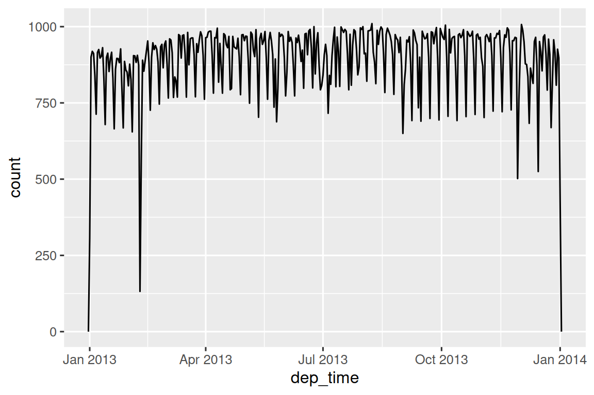
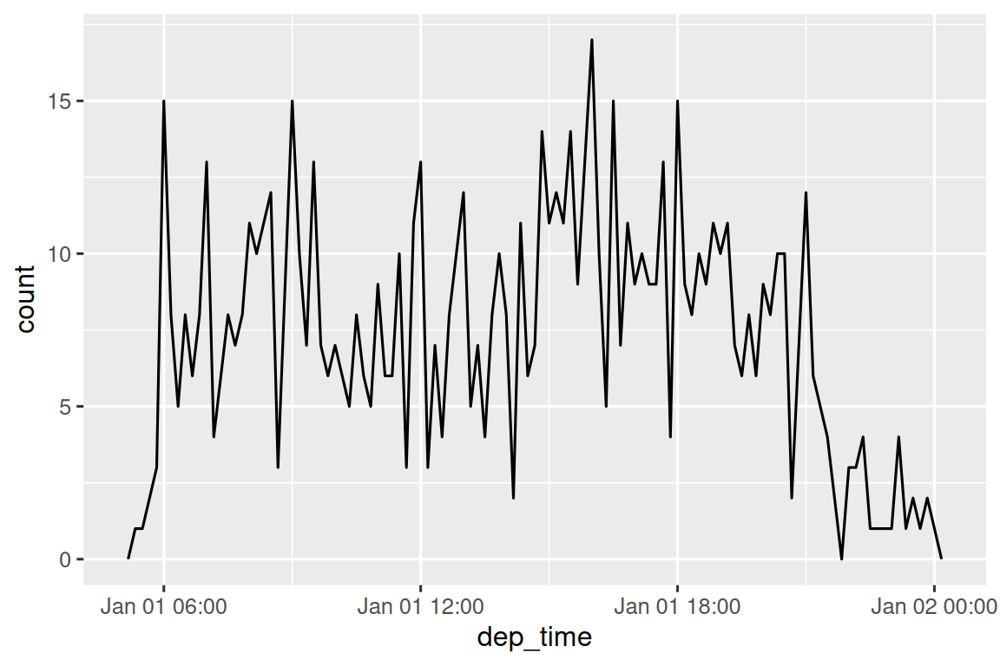
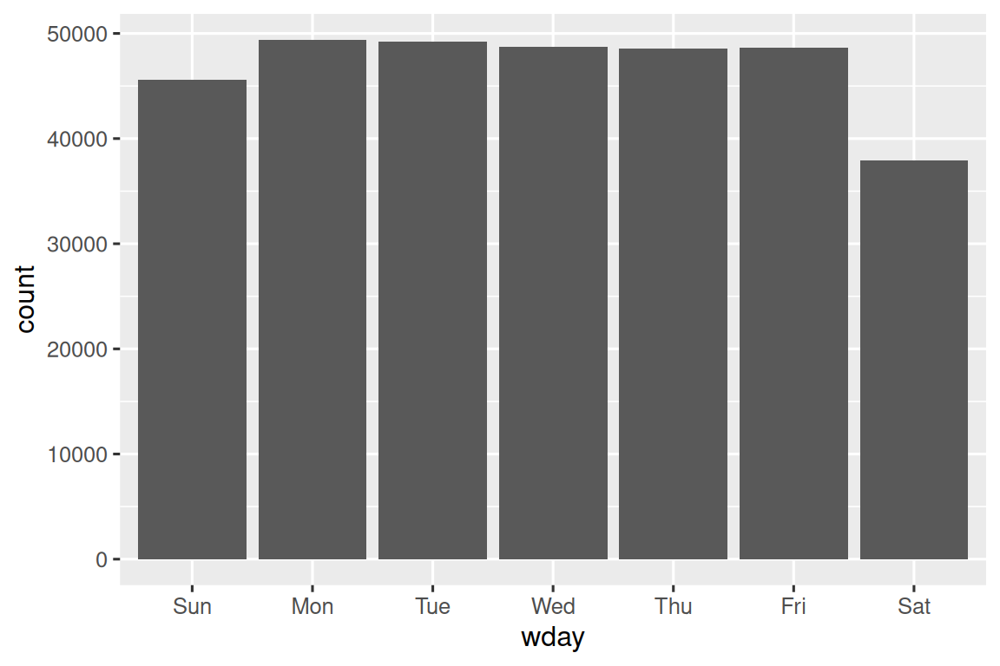
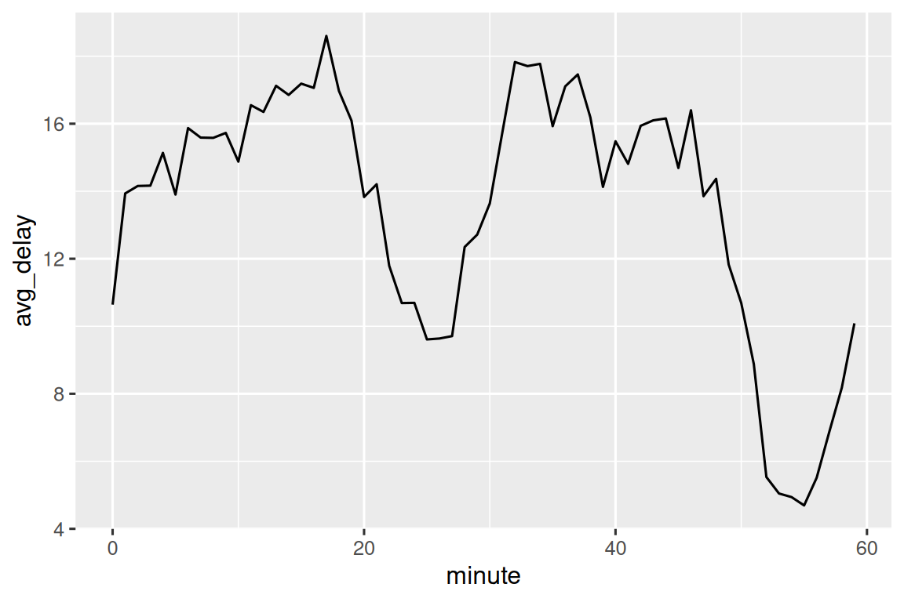
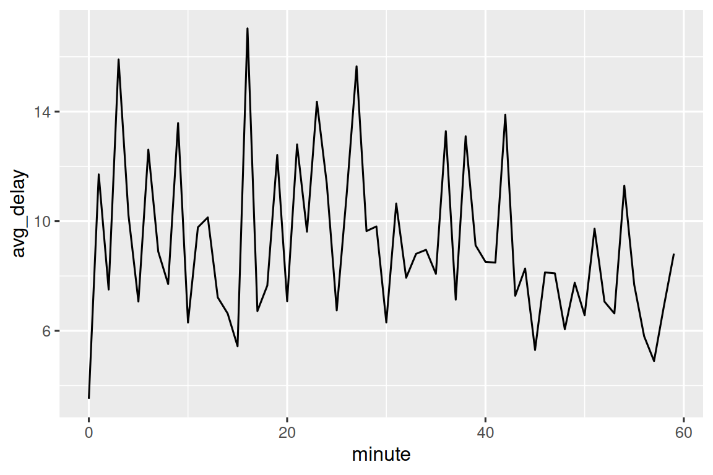
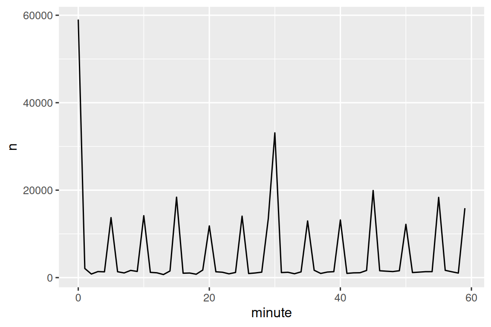
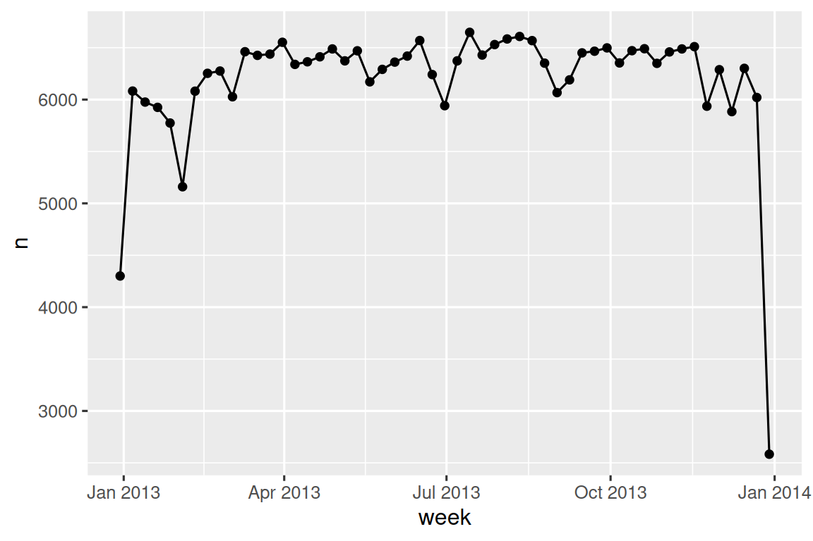
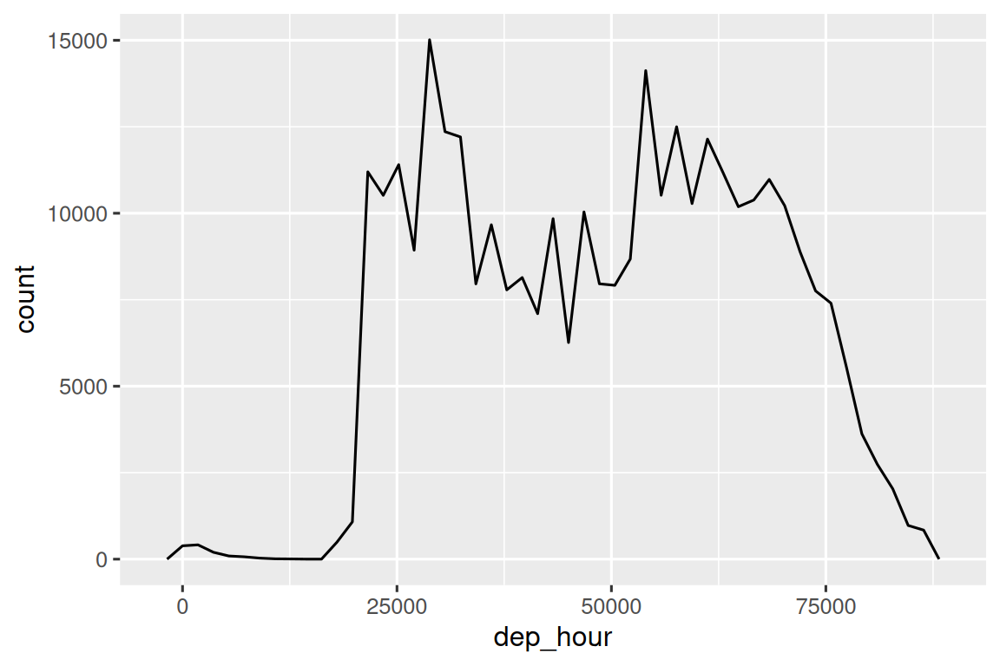
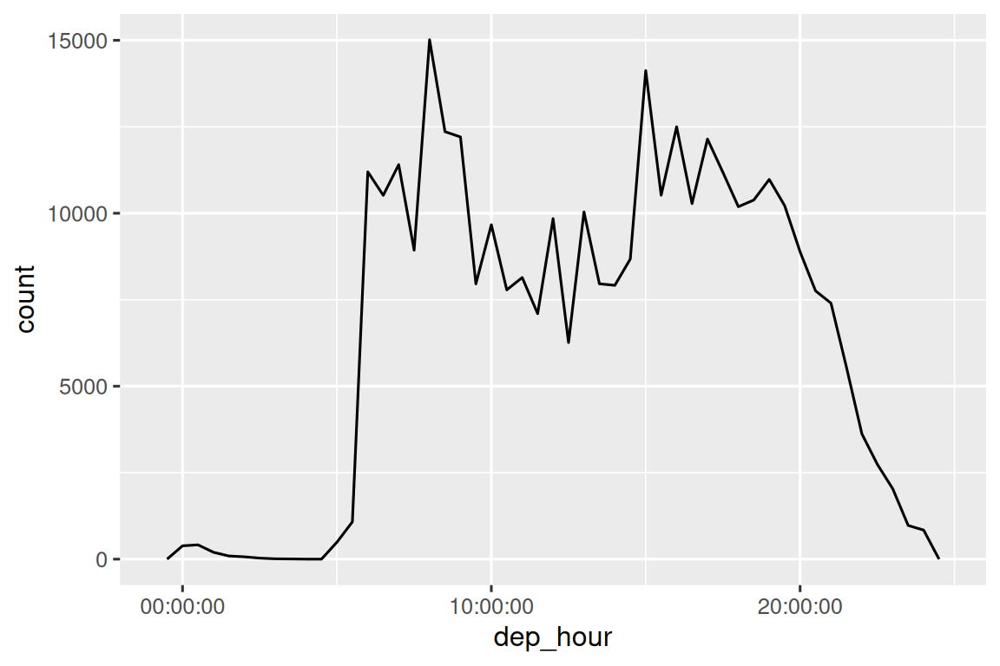

library(tidyverse)
library(nycflights13)날짜와 시간
이 장에서는 R에서 날짜와 시간으로 작업하는 방법을 보여줄 것입니다. 언뜻 보기에(At first glance) 날짜와 시간은 단순해 보입니다. 여러분은 일상생활에서 날짜와 시간을 항상 사용하며, 그것들은 큰 혼란을 일으키는 것 같지 않습니다. 그러나 날짜와 시간에 대해 더 많이 배울수록 점점 더 복잡해지는(complicated) 것 같습니다!
워밍업(warm up)을 위해 1년에 며칠이 있고 하루에 몇 시간이 있는지 생각해 보세요. 대부분의 해는 365일이지만 윤년(leap years)은 366일이라는 것을 기억할 것입니다. 어떤 해가 윤년인지 결정하는 전체 규칙을 알고 계십니까 하루의 시간 수는 약간 덜 명확합니다. 대부분의 날은 24시간이지만 일광 절약 시간제(DST)를 사용하는 곳에서는 매년 하루는 23시간이고 다른 하루는 25시간입니다.
날짜와 시간이 어려운 이유는 두 가지 물리적 현상(지구의 자전과 태양 주위의 공전)을 월, 시간대(time zones), 일광 절약 시간제(DST)를 포함한 온갖 지정학적(geopolitical) 현상과 조화(reconcile)시켜야 하기 때문입니다.
이 장에서는 날짜와 시간에 대한 모든 세부 사항을 다 가르치지는 않지만, 일반적인 데이터 분석 과제를 해결하는 데 도움이 될 실용적인 기술의 탄탄한 기초(solid grounding)를 제공할 것입니다.
최신 tidyverse 릴리스부터 lubridate는 핵심 tidyverse의 일부입니다. 실습 데이터를 위해 nycflights13도 필요합니다.
1 날짜/시간 생성하기
시간상의 한순간(instant)을 나타내는 날짜/시간 데이터에는 세 가지 유형이 있습니다.
날짜(date): 티블(Tibbles)은 이를
<date>로 출력합니다.하루 중의 시간(time): 티블은 이를
<time>으로 출력합니다.날짜-시간(date-time)은 날짜에 시간을 더한 것입니다. 이는 시간상의 한순간을 고유하게 식별합니다(보통 가까운 초(second)까지): 티블은 이를
<dttm>으로 출력합니다. 기본 R은 이것을 POSIXct라고 부르지만, 입에 착 달라붙지는(trip off the tongue) 않습니다.
R에는 시간을 저장하는 기본 클래스가 없기 때문에 이 장에서는 날짜와 날짜-시간에 중점을 둘 것입니다. 필요한 경우 hms 패키지를 사용할 수 있습니다.
요구 사항에 맞는(works for your needs) 가능한 한 단순한 데이터 유형을 항상 사용해야 합니다. 즉, 날짜-시간 대신 날짜를 사용할 수 있다면 그렇게 해야 합니다.
날짜-시간은 시간대를 처리해야 하기 때문에 훨씬(substantially) 더 복잡하며, 이에 대해서는 장의 끝에서 다시 설명하겠습니다.
현재 날짜나 날짜-시간을 얻으려면 today() 또는 now()를 사용할 수 있습니다.
today()
#> [1] "2026-08-18"
now()
#> [1] "2026-08-18 10:34:26 KST"그렇지 않은 경우(Otherwise), 다음 섹션에서는 날짜/시간을 생성할 가능성이 있는 네 가지 방법을 설명합니다.
- readr을 사용하여 파일을 읽는 동안
- 문자열에서 생성
- 개별 날짜-시간 구성 요소에서 생성
- 기존 날짜/시간 객체에서 생성
1.1 가져오기 중
CSV에 ISO8601 날짜 또는 날짜-시간이 포함되어 있으면 아무것도 할 필요가 없습니다. readr이 자동으로 인식합니다.
csv <- "date,datetime\n2022-01-02,2022-01-02 05:12"
read_csv(csv)
#> Warning: The `file` argument of `read_csv()` should use `I()` for literal data as of
#> readr 2.2.0.
#>
#> # Bad (for example):
#> read_csv("x,y\n1,2")
#>
#> # Good:
#> read_csv(I("x,y\n1,2"))
#> # A tibble: 1 × 2
#> date datetime
#> <date> <dttm>
#> 1 2022-01-02 2022-01-02 05:12:00이전에 ISO8601에 대해 들어본 적이 없다면, 이것은 -로 구분되어 큰 것에서 작은 것 순으로 날짜의 구성 요소가 구성되는 국제 표준 날짜 표기법입니다. 예를 들어 ISO8601에서 2022년 5월 3일은 2022-05-03입니다. ISO8601 날짜에는 시간도 포함될 수 있으며 시, 분, 초는 :로 구분되고 날짜와 시간 구성 요소는 T 또는 공백으로 구분됩니다.
예를 들어 2022년 5월 3일 오후 4시 26분을 2022-05-03 16:26 또는 2022-05-03T16:26으로 쓸 수 있습니다.
다른 날짜-시간 형식의 경우, 날짜-시간 형식과 함께 col_types 및 col_date() 또는 col_datetime()을 사용해야 합니다. readr에서 사용하는 날짜-시간 형식은 여러 프로그래밍 언어에서 사용되는 표준으로, % 뒤에 단일 문자가 오는 형태로 날짜 구성 요소를 설명합니다. 예를 들어 %Y-%m-%d는 연도, -, 월(숫자), -, 일로 구성된 날짜를 지정합니다.
아래 표에는 모든 옵션이 나열되어 있습니다.
| 유형(Type) | 코드(Code) | 의미(Meaning) | 예시(Example) |
|---|---|---|---|
| 연(Year) | %Y |
4자리 연도 | 2021 |
%y |
2자리 연도 | 21 | |
| 월(Month) | %m |
숫자 | 2 |
%b |
약어 이름 | Feb | |
%B |
전체 이름 | February | |
| 일(Day) | %d |
1자리 또는 2자리 숫자 | 2 |
%e |
2자리 숫자 | 02 | |
| 시간(Time) | %H |
24시간 형식 시간 | 13 |
%I |
12시간 형식 시간 | 1 | |
%p |
AM/PM | pm | |
%M |
분 | 35 | |
%S |
초 | 45 | |
%OS |
소수(decimal) 구성 요소가 있는 초 | 45.35 | |
%Z |
시간대 이름 | America/Chicago | |
%z |
UTC와의 오프셋(Offset) | +0800 | |
| 기타(Other) | %. |
숫자가 아닌 문자 한 개 건너뛰기 | : |
%* |
숫자가 아닌 임의 개의 문자 건너뛰기 |
그리고 이 코드는 매우 모호한(ambiguous) 날짜에 적용된 몇 가지 옵션을 보여줍니다.
csv <- "
date
01/02/15
"
read_csv(csv, col_types = cols(date = col_date("%m/%d/%y")))
#> # A tibble: 1 × 1
#> date
#> <date>
#> 1 2015-01-02
read_csv(csv, col_types = cols(date = col_date("%d/%m/%y")))
#> # A tibble: 1 × 1
#> date
#> <date>
#> 1 2015-02-01
read_csv(csv, col_types = cols(date = col_date("%y/%m/%d")))
#> # A tibble: 1 × 1
#> date
#> <date>
#> 1 2001-02-15날짜 형식을 어떻게 지정하든 R로 가져오면 항상 같은 방식으로 표시(displayed)된다는 점에 유의하세요.
%b 또는 %B를 사용하고 영어가 아닌 날짜로 작업하는 경우 locale()도 제공해야 합니다. date_names_langs()에서 내장 언어 목록을 참조하거나 date_names()를 사용하여 자신만의 언어를 만드세요,
1.2 문자열에서 생성
날짜-시간 지정 언어는 강력하지만 날짜 형식에 대한 신중한 분석이 필요합니다. 대안적인 접근 방식은 구성 요소의 순서를 지정하면 자동으로 형식을 결정(determine)하려고 시도하는 lubridate의 도우미 함수를 사용하는 것입니다. 이를 사용하려면 날짜에 연, 월, 일이 나타나는 순서를 식별한 다음 동일한 순서로 “y”, “m”, “d”를 배열(arrange)합니다. 그러면 날짜를 구문 분석(parse)할 lubridate 함수의 이름이 됩니다.
ymd("2017-01-31")
#> [1] "2017-01-31"
mdy("January 31st, 2017")
#> [1] "2017-01-31"
dmy("31-Jan-2017")
#> [1] "2017-01-31"ymd() 및 그 친구 함수들(friends)은 날짜를 생성합니다. 날짜-시간을 생성하려면 구문 분석 함수 이름에 밑줄(_)과 “h”, “m”, “s” 중 하나 이상을 추가합니다.
ymd_hms("2017-01-31 20:11:59")
#> [1] "2017-01-31 20:11:59 UTC"
mdy_hm("01/31/2017 08:01")
#> [1] "2017-01-31 08:01:00 UTC"시간대를 제공하여 날짜에서 날짜-시간을 생성하도록 강제(force)할 수도 있습니다.
ymd("2017-01-31", tz = "UTC")
#> [1] "2017-01-31 UTC"여기서 저는 GMT 또는 그리니치 표준시(Greenwich Mean Time)로도 알려진 경도(longitude) 0°의 시간대인 UTC 시간대를 사용합니다. 이것은 일광 절약 시간제를 사용하지 않으므로 계산하기가 좀 더 쉽습니다 (UTC가 무엇의 약자인지 궁금할 수 있습니다. 이는 영어인 “Coordinated Universal Time”과 프랑스어인 “Temps Universel Coordonné” 사이의 타협안(compromise)입니다).
1.3 개별 구성 요소에서 생성
단일 문자열 대신 날짜-시간의 개별 구성 요소가 여러 열(columns)에 걸쳐 분산되어(spread) 있는 경우가 있습니다. 이것이 flights 데이터에 있는 내용입니다.
flights |>
select(year, month, day, hour, minute)
#> # A tibble: 336,776 × 5
#> year month day hour minute
#> <int> <int> <int> <dbl> <dbl>
#> 1 2013 1 1 5 15
#> 2 2013 1 1 5 29
#> 3 2013 1 1 5 40
#> 4 2013 1 1 5 45
#> 5 2013 1 1 6 0
#> 6 2013 1 1 5 58
#> # ℹ 336,770 more rows이러한 종류의 입력에서 날짜/시간을 생성하려면 날짜의 경우 make_date()를 사용하고 날짜-시간의 경우 make_datetime()을 사용합니다.
flights |>
select(year, month, day, hour, minute) |>
mutate(departure = make_datetime(year, month, day, hour, minute))
#> # A tibble: 336,776 × 6
#> year month day hour minute departure
#> <int> <int> <int> <dbl> <dbl> <dttm>
#> 1 2013 1 1 5 15 2013-01-01 05:15:00
#> 2 2013 1 1 5 29 2013-01-01 05:29:00
#> 3 2013 1 1 5 40 2013-01-01 05:40:00
#> 4 2013 1 1 5 45 2013-01-01 05:45:00
#> 5 2013 1 1 6 0 2013-01-01 06:00:00
#> 6 2013 1 1 5 58 2013-01-01 05:58:00
#> # ℹ 336,770 more rowsflights의 네 가지 시간 열 각각에 대해 동일한 작업을 수행해 봅시다. 시간은 약간 이상한(odd) 형식으로 표시(represented)되므로 나머지 연산(modulus arithmetic)을 사용하여 시(hour)와 분(minute) 구성 요소를 추출합니다. 날짜-시간 변수를 만들고 나면 이 장의 나머지 부분에서 살펴볼 변수에 초점을 맞춥니다.
make_datetime_100 <- function(year, month, day, time) {
make_datetime(year, month, day, time %/% 100, time %% 100)
}
flights_dt <- flights |>
filter(!is.na(dep_time), !is.na(arr_time)) |>
mutate(
dep_time = make_datetime_100(year, month, day, dep_time),
arr_time = make_datetime_100(year, month, day, arr_time),
sched_dep_time = make_datetime_100(year, month, day, sched_dep_time),
sched_arr_time = make_datetime_100(year, month, day, sched_arr_time)
) |>
select(origin, dest, ends_with("delay"), ends_with("time"))
flights_dt
#> # A tibble: 328,063 × 9
#> origin dest dep_delay arr_delay dep_time sched_dep_time
#> <chr> <chr> <dbl> <dbl> <dttm> <dttm>
#> 1 EWR IAH 2 11 2013-01-01 05:17:00 2013-01-01 05:15:00
#> 2 LGA IAH 4 20 2013-01-01 05:33:00 2013-01-01 05:29:00
#> 3 JFK MIA 2 33 2013-01-01 05:42:00 2013-01-01 05:40:00
#> 4 JFK BQN -1 -18 2013-01-01 05:44:00 2013-01-01 05:45:00
#> 5 LGA ATL -6 -25 2013-01-01 05:54:00 2013-01-01 06:00:00
#> 6 EWR ORD -4 12 2013-01-01 05:54:00 2013-01-01 05:58:00
#> # ℹ 328,057 more rows
#> # ℹ 3 more variables: arr_time <dttm>, sched_arr_time <dttm>, …이 데이터를 통해 한 해 동안의 출발 시간 분포를 시각화할 수 있습니다.
flights_dt |>
ggplot(aes(x = dep_time)) +
geom_freqpoly(binwidth = 86400) # 86400초 = 1일
또는 단일 요일(single day) 내에서 시각화할 수 있습니다.
flights_dt |>
filter(dep_time < ymd(20130102)) |>
ggplot(aes(x = dep_time)) +
geom_freqpoly(binwidth = 600) # 600초 = 10분
날짜-시간을 (히스토그램과 같은) 수치적 문맥(numeric context)에서 사용할 때 1은 1초를 의미하므로, binwidth가 86400이라는 것은 하루를 의미한다는 점에 유의하세요. 날짜의 경우 1은 1일을 의미합니다.
1.4 다른 유형에서 생성
날짜-시간과 날짜 사이를 전환(switch)하고 싶을 수 있습니다. 이것이 as_datetime() 및 as_date()의 역할(job)입니다.
as_datetime(today())
#> [1] "2026-08-18 UTC"
as_date(now())
#> [1] "2026-08-18"때로는 1970-01-01인 “유닉스 에포크(Unix Epoch)”로부터의 수치적 오프셋(numeric offsets)으로 날짜/시간을 얻게 될 것입니다. 오프셋이 초 단위인 경우 as_datetime()을 사용하고 일(days) 단위인 경우 as_date()를 사용합니다.
as_datetime(60 * 60 * 10)
#> [1] "1970-01-01 10:00:00 UTC"
as_date(365 * 10 + 2)
#> [1] "1980-01-01"1.5 연습 문제
- 유효하지 않은 날짜가 포함된 문자열을 구문 분석(parse)하면 어떻게 됩니까?
ymd(c("2010-10-10", "bananas"))today()의tzone인수는 무슨 일을 합니까? 그것이 중요한 이유는 무엇입니까?다음 각 날짜-시간에 대해 readr 열 사양(column specification)과 lubridate 함수를 사용하여 이를 어떻게 구문 분석할지 보여주세요.
d1 <- "January 1, 2010"
d2 <- "2015-Mar-07"
d3 <- "06-Jun-2017"
d4 <- c("August 19 (2015)", "July 1 (2015)")
d5 <- "12/30/14" # 2014년 12월 30일
t1 <- "1705"
t2 <- "11:15:10.12 PM"2 날짜-시간 구성 요소
이제 날짜-시간 데이터를 R의 날짜-시간 데이터 구조로 가져오는 방법을 알았으니 이들로 무엇을 할 수 있는지 탐색(explore)해 봅시다.
2.1 구성 요소 가져오기
접근자 함수인 year(), month(), mday()(월의 일(day of the month)), yday()(연의 일(day of the year)), wday()(요일(day of the week)), hour(), minute(), second()를 사용하여 날짜의 개별 부분을 추출(pull out)할 수 있습니다.
이것들은 사실상(effectively) make_datetime()의 반대입니다.
datetime <- ymd_hms("2026-07-08 12:34:56")
year(datetime)
#> [1] 2026
month(datetime)
#> [1] 7
mday(datetime)
#> [1] 8
yday(datetime)
#> [1] 189
wday(datetime)
#> [1] 4month() 및 wday()의 경우 label = TRUE를 설정하여 월이나 요일의 약어 이름을 반환할 수 있습니다. 전체 이름을 반환하려면 abbr = FALSE를 설정하세요.
month(datetime, label = TRUE)
#> [1] Jul
#> 12 Levels: Jan < Feb < Mar < Apr < May < Jun < Jul < Aug < Sep < ... < Dec
wday(datetime, label = TRUE, abbr = FALSE)
#> [1] Wednesday
#> 7 Levels: Sunday < Monday < Tuesday < Wednesday < Thursday < ... < Saturdaywday()를 사용하여 주말보다 주중(during the week)에 더 많은 항공편이 출발한다는 것을 확인할 수 있습니다.
flights_dt |>
mutate(wday = wday(dep_time, label = TRUE)) |>
ggplot(aes(x = wday)) +
geom_bar()
한 시간 내의 분당 평균 출발 지연 시간을 살펴볼 수도 있습니다. 흥미로운 패턴이 있습니다. 20-30분과 50-60분에 떠나는 항공편이 그 시간의 나머지 부분보다 훨씬 지연이 적습니다!
flights_dt |>
mutate(minute = minute(dep_time)) |>
group_by(minute) |>
summarize(
avg_delay = mean(dep_delay, na.rm = TRUE),
n = n()
) |>
ggplot(aes(x = minute, y = avg_delay)) +
geom_line()
흥미롭게도(Interestingly) 예정된(scheduled) 출발 시간을 살펴보면 그렇게 강력한 패턴이 보이지 않습니다.
sched_dep <- flights_dt |>
mutate(minute = minute(sched_dep_time)) |>
group_by(minute) |>
summarize(
avg_delay = mean(arr_delay, na.rm = TRUE),
n = n()
)
ggplot(sched_dep, aes(x = minute, y = avg_delay)) +
geom_line()
그렇다면 실제 출발 시간에서 이런 패턴이 보이는 이유는 무엇일까요?
글쎄요, 인간이 수집한 많은 데이터와 마찬가지로 항공편이 “깔끔한(nice)” 출발 시간에 떠나는 경향이 강한 편향(bias)이 있습니다.
인간의 판단(judgement)이 관련된 데이터로 작업할 때는 항상 이러한 종류의 패턴에 대해 경계(alert)하세요!

2.2 반올림 (Rounding)
개별 구성 요소를 시각화(plotting)하는 대안적(alternative) 접근 방식은 floor_date(), round_date(), ceiling_date()를 사용하여 날짜를 근처의(nearby) 시간 단위로 반올림하는 것입니다.
각 함수는 조정(adjust)할 날짜 벡터를 취한 다음 내림(floor), 올림(ceiling), 또는 반올림(round to)할 단위의 이름을 취합니다. 예를 들어, 이를 통해 주당 항공편 수를 시각화할 수 있습니다.
flights_dt |>
count(week = floor_date(dep_time, "week")) |>
ggplot(aes(x = week, y = n)) +
geom_line() +
geom_point()
dep_time과 그날의 이른 순간(earliest instant) 사이의 차이를 계산하여 반올림을 사용해 하루 동안의(across the course of a day) 항공편 분포를 보여줄 수 있습니다.
flights_dt |>
mutate(dep_hour = dep_time - floor_date(dep_time, "day")) |>
ggplot(aes(x = dep_hour)) +
geom_freqpoly(binwidth = 60 * 30)
#> Don't know how to automatically pick scale for object of type <difftime>.
#> Defaulting to continuous.
한 쌍의(pair of) 날짜-시간 간의 차이를 계산하면 difftime이 산출됩니다. 이를 hms 객체로 변환하여 더 유용한 x축을 얻을 수 있습니다.
flights_dt |>
mutate(dep_hour = hms::as_hms(dep_time - floor_date(dep_time, "day"))) |>
ggplot(aes(x = dep_hour)) +
geom_freqpoly(binwidth = 60 * 30)
2.3 구성 요소 수정하기
각 접근자 함수를 사용하여 날짜/시간의 구성 요소를 수정할 수도 있습니다.이것은 데이터 분석에서는 많이 발생하지(come up) 않지만, 날짜가 분명히 잘못된 데이터를 정리(cleaning)할 때 유용할 수 있습니다.
(datetime <- ymd_hms("2026-07-08 12:34:56"))
#> [1] "2026-07-08 12:34:56 UTC"
year(datetime) <- 2030
datetime
#> [1] "2030-07-08 12:34:56 UTC"
month(datetime) <- 01
datetime
#> [1] "2030-01-08 12:34:56 UTC"
hour(datetime) <- hour(datetime) + 1
datetime
#> [1] "2030-01-08 13:34:56 UTC"대안으로, 기존 변수를 수정하는 대신 update()를 사용하여 새 날짜-시간을 만들 수 있습니다. 또한 이를 통해 한 번에(in one step) 여러 값을 설정할 수 있습니다.
update(datetime, year = 2030, month = 2, mday = 2, hour = 2)
#> [1] "2030-02-02 02:34:56 UTC"값이 너무 크면 이월(roll-over)됩니다.
update(ymd("2023-02-01"), mday = 30)
#> [1] "2023-03-02"
update(ymd("2023-02-01"), hour = 400)
#> [1] "2023-02-17 16:00:00 UTC"2.4 연습 문제
하루 중 항공편 시간의 분포는 한 해 동안(over the course of the year) 어떻게 변합니까?
dep_time,sched_dep_time및dep_delay를 비교하세요. 이것들은 일관성이 있습니까(consistent)? 여러분이 발견한 것을 설명하세요.air_time을 출발(departure)과 도착(arrival) 사이의 지속 시간(duration)과 비교하세요. 여러분이 발견한 것을 설명하세요. (힌트: 공항의 위치를 고려하세요.)평균 지연 시간은 하루 동안 어떻게 변합니까?
dep_time을 사용해야 합니까, 아니면sched_dep_time을 사용해야 합니까? 이유는 무엇입니까?지연 가능성(chance)을 최소화(minimise)하려면 요일 중 어느 날짜에 출발해야 합니까?
diamonds$carat의 분포와flights$sched_dep_time의 분포를 비슷하게 만드는 것은 무엇입니까?20-30분과 50-60분에 항공편이 일찍 출발(early departures)하는 것이 일찍 떠나는 예정된 항공편 때문이라는 가설(hypothesis)을 확인하세요.(힌트: 항공편이 지연되었는지 여부를 알려주는 이진 변수(binary variable)를 만드세요)
3 시간 범위
다음으로 뺄셈(subtraction), 덧셈(addition), 나눗셈(division)을 포함하여 날짜에 대한 산술 연산이 어떻게 작동하는지 배울 것입니다. 그 과정에서(Along the way) 시간 범위를 나타내는 중요한 세 가지 클래스에 대해 배울 것입니다.
- 지속 시간(Durations)은 정확한 초 수를 나타냅니다.
- 기간(Periods)은 주(weeks)나 월(months)과 같은 인간의 단위를 나타냅니다.
- 구간(Intervals)은 시작점과 끝점을 나타냅니다.
지속 시간, 기간, 구간 중에서 어떻게 선택합니까? 항상 그렇듯이(As always) 문제를 해결하는 단순한 데이터 구조를 선택하세요. 물리적 시간만 신경 쓴다면(care about) 지속 시간을 사용하세요; 인간의 시간을 추가해야 한다면 기간을 사용하세요; 인간의 단위로 범위가 얼마나 긴지 파악해야 한다면 구간을 사용하세요.
3.1 지속 시간 (Durations)
R에서 두 날짜를 빼면 difftime 객체를 얻습니다.
# Hadley의 나이는 몇 살입니까?
h_age <- today() - ymd("1979-10-14")
h_age
#> Time difference of 17110 daysdifftime 클래스 객체는 초, 분, 시간, 일 또는 주 단위의 시간 범위를 기록합니다. 이러한 모호성(ambiguity)으로 인해 difftime 작업이 약간 고통스러울 수 있으므로 lubridate는 항상 초를 사용하는 대안인 지속 시간(duration)을 제공합니다.
as.duration(h_age)
#> [1] "1478304000s (~46.84 years)"지속 시간은 여러 편리한 생성자(convenient constructors)와 함께 제공됩니다.
dseconds(15)
#> [1] "15s"
dminutes(10)
#> [1] "600s (~10 minutes)"
dhours(c(12, 24))
#> [1] "43200s (~12 hours)" "86400s (~1 days)"
ddays(0:5)
#> [1] "0s" "86400s (~1 days)" "172800s (~2 days)"
#> [4] "259200s (~3 days)" "345600s (~4 days)" "432000s (~5 days)"
dweeks(3)
#> [1] "1814400s (~3 weeks)"
dyears(1)
#> [1] "31557600s (~1 years)"지속 시간은 항상 시간 범위를 초 단위로 기록합니다. 분, 시간, 일, 주, 연을 초로 변환하여 더 큰 단위를 만듭니다. 1분은 60초, 1시간은 60분, 하루는 24시간, 일주일은 7일입니다. 더 큰 시간 단위는 더 문제가 많습니다(problematic). 1년은 1년의 “평균” 일수, 즉 365.25를 사용합니다. 변동(variation)이 너무 크기 때문에 월을 지속 시간으로 변환할 방법이 없습니다.
지속 시간을 더하고 곱할 수 있습니다.
2 * dyears(1)
#> [1] "63115200s (~2 years)"
dyears(1) + dweeks(12) + dhours(15)
#> [1] "38869200s (~1.23 years)"날짜(days)에 지속 시간을 더하거나 뺄 수 있습니다.
tomorrow <- today() + ddays(1)
last_year <- today() - dyears(1)그러나 지속 시간은 정확한 초 수를 나타내므로 때로는 예상치 못한(unexpected) 결과를 얻을 수 있습니다.
one_am <- ymd_hms("2026-03-08 01:00:00", tz = "America/New_York")
one_am
#> [1] "2026-03-08 01:00:00 EST"
one_am + ddays(1)
#> [1] "2026-03-09 02:00:00 EDT"왜 3월 8일 오전 1시의 하루 뒤가 3월 9일 오전 2시일까요? 날짜를 주의 깊게 보면 시간대가 변경된 것도 알 수 있습니다. 3월 8일은 일광 절약 시간제(DST)가 시작되는 시기이기 때문에 23시간밖에 없으므로, 하루 분량의(full days worth of) 초를 더하면 결국 다른 시간이 됩니다.
3.2 기간 (Periods)
이 문제를 해결하기 위해 lubridate는 기간(periods)을 제공합니다. 기간은 시간 범위이지만 초 단위의 고정된 길이를 갖지 않고 일(days)과 월(months)과 같은 “인간의” 시간으로 작동합니다. 이로 인해 좀 더 직관적인 방식(intuitive way)으로 작동할 수 있습니다.
one_am
#> [1] "2026-03-08 01:00:00 EST"
one_am + days(1)
#> [1] "2026-03-09 01:00:00 EDT"지속 시간과 마찬가지로 기간은 친숙한 여러 생성자 함수(constructor functions)를 사용하여 만들 수 있습니다.
hours(c(12, 24))
#> [1] "12H 0M 0S" "24H 0M 0S"
days(7)
#> [1] "7d 0H 0M 0S"
months(1:6)
#> [1] "1m 0d 0H 0M 0S" "2m 0d 0H 0M 0S" "3m 0d 0H 0M 0S" "4m 0d 0H 0M 0S"
#> [5] "5m 0d 0H 0M 0S" "6m 0d 0H 0M 0S"기간을 더하고 곱할 수 있습니다.
10 * (months(6) + days(1))
#> [1] "60m 10d 0H 0M 0S"
days(50) + hours(25) + minutes(2)
#> [1] "50d 25H 2M 0S"그리고 당연히 날짜에 추가할 수도 있습니다. 지속 시간과 비교할 때 기간은 예상한 대로 수행될 가능성이 더 높습니다.
# 윤년
ymd("2024-01-01") + dyears(1)
#> [1] "2024-12-31 06:00:00 UTC"
ymd("2024-01-01") + years(1)
#> [1] "2025-01-01"
# 일광 절약 시간제
one_am + ddays(1)
#> [1] "2026-03-09 02:00:00 EDT"
one_am + days(1)
#> [1] "2026-03-09 01:00:00 EDT"기간을 사용하여 항공편 날짜와 관련된 이상한 점(oddity)을 수정해 보겠습니다. 일부 비행기는 뉴욕시에서 출발하기 전에 목적지에 도착한 것처럼 보입니다.
flights_dt |>
filter(arr_time < dep_time)
#> # A tibble: 10,633 × 9
#> origin dest dep_delay arr_delay dep_time sched_dep_time
#> <chr> <chr> <dbl> <dbl> <dttm> <dttm>
#> 1 EWR BQN 9 -4 2013-01-01 19:29:00 2013-01-01 19:20:00
#> 2 JFK DFW 59 NA 2013-01-01 19:39:00 2013-01-01 18:40:00
#> 3 EWR TPA -2 9 2013-01-01 20:58:00 2013-01-01 21:00:00
#> 4 EWR SJU -6 -12 2013-01-01 21:02:00 2013-01-01 21:08:00
#> 5 EWR SFO 11 -14 2013-01-01 21:08:00 2013-01-01 20:57:00
#> 6 LGA FLL -10 -2 2013-01-01 21:20:00 2013-01-01 21:30:00
#> # ℹ 10,627 more rows
#> # ℹ 3 more variables: arr_time <dttm>, sched_arr_time <dttm>, …이것들은 야간 비행(overnight flights)입니다. 우리는 출발 시간과 도착 시간에 동일한 날짜 정보를 사용했지만, 이 항공편들은 다음 날 도착했습니다. 각 야간 항공편의 도착 시간에 days(1)을 더하여 이를 수정할 수 있습니다.
flights_dt <- flights_dt |>
mutate(
overnight = arr_time < dep_time,
arr_time = arr_time + days(overnight),
sched_arr_time = sched_arr_time + days(overnight)
)이제 우리의 모든 항공편이 물리학의 법칙(laws of physics)을 따릅니다(obey).
flights_dt |>
filter(arr_time < dep_time)
#> # A tibble: 0 × 10
#> # ℹ 10 variables: origin <chr>, dest <chr>, dep_delay <dbl>,
#> # arr_delay <dbl>, dep_time <dttm>, sched_dep_time <dttm>, …3.3 구간
dyears(1) / ddays(365)는 무엇을 반환합니까? 1이 아닙니다. 왜냐하면 dyears()는 평균 1년당 초 수로 정의되며 이는 365.25일이기 때문입니다.
years(1) / days(1)은 무엇을 반환합니까? 글쎄요, 연도가 2015년이면 365를 반환해야 하지만, 2016년이면 366을 반환해야 합니다!
lubridate가 하나의 명확한 답을 제공할 만큼 충분한 정보가 없습니다. 대신 그것이 하는 일은 추정치(estimate)를 제공하는 것입니다.
years(1) / days(1)
#> [1] 365.25보다 정확한 측정(measurement)을 원한다면 구간(interval)을 사용해야 합니다. 구간은 시작 날짜 시간과 종료 날짜 시간의 쌍(pair)이거나 시작점이 있는 지속 시간이라고 생각할 수 있습니다.
start %--% end를 작성하여 구간을 만들 수 있습니다.
y2023 <- ymd("2023-01-01") %--% ymd("2024-01-01")
y2024 <- ymd("2024-01-01") %--% ymd("2025-01-01")
y2023
#> [1] 2023-01-01 UTC--2024-01-01 UTC
y2024
#> [1] 2024-01-01 UTC--2025-01-01 UTC그런 다음 days()로 나누어 그 해에 며칠이 들어맞는지(fit) 알아낼 수 있습니다.
y2023 / days(1)
#> [1] 365
y2024 / days(1)
#> [1] 3663.4 연습 문제
이제 막 R을 배우기 시작한 사람에게
days(!overnight)와days(overnight)를 설명하세요. 여러분이 알아야 할 핵심 사실은 무엇입니까?2015년 매달의 첫째 날을 제공하는(giving) 날짜 벡터를 만드세요. 현재 연도 매달의 첫째 날을 제공하는 날짜 벡터를 만드세요.
여러분의 생일(날짜로)이 주어지면 몇 살(in years)인지 반환하는 함수를 작성하세요.
4 시간대
시간대는 지정학적 엔티티와의 상호 작용 때문에 엄청나게 복잡한 주제입니다. 다행히 데이터 분석에 모두 중요한 것은 아니기 때문에 모든 세부 사항을 파헤칠(dig into) 필요는 없지만, 정면으로 대처해야 할(tackle head on) 몇 가지 과제가 있습니다.
첫 번째 과제는 일상적인 시간대 이름이 모호한(ambiguous) 경향이 있다는 것입니다. 예를 들어 여러분이 미국인이라면 EST, 즉 동부 표준시(Eastern Standard Time)에 익숙할 것입니다.
그러나 호주와 캐나다에도 EST가 있습니다! 혼란을 피하기 위해 R은 국제 표준 IANA 시간대를 사용합니다. 이들은 일관된 이름 지정 체계(naming scheme)인 {area}/{location}을 사용하며, 일반적으로 {continent}/{city} 또는 {ocean}/{city} 형태입니다. 예를 들어 “America/New_York”, “Europe/Paris”, “Pacific/Auckland” 등이 있습니다.
일반적으로 시간대가 한 국가 또는 국가 내 지역과 관련되어 있다고 생각하는데 왜 시간대가 도시를 사용하는지 궁금할 것입니다. 이것은 IANA 데이터베이스가 수십 년 분량의 시간대 규칙을 기록해야 하기 때문입니다. 수십 년에 걸쳐 국가 이름이 꽤 자주 변경되거나(또는 분할되거나-break apart)하지만, 도시 이름은 동일하게 유지되는 경향이 있습니다. 또 다른 문제는 이름이 현재의 동작(behavior)뿐만 아니라 완전한 역사도 반영해야(reflect) 한다는 것입니다. 예를 들어 “America/New_York”과 “America/Detroit”에 대한 시간대가 모두 있습니다. 이 두 도시 모두 현재 동부 표준시를 사용하지만 1969-1972년에 미시간주(디트로이트가 위치한 주)는 일광 절약 시간제(DST)를 따르지 않았으므로 다른 이름이 필요합니다.
이러한 이야기 중 일부를 읽기 위해서라도 원시 시간대 데이터베이스(https://www.iana.org/time-zones)를 읽어볼 가치가 있습니다!
Sys.timezone()을 사용하여 R이 여러분의 현재 시간대를 무엇이라고 생각하는지 알아낼 수 있습니다.
Sys.timezone()
#> [1] "Asia/Seoul"(R이 모르면 NA를 얻게 됩니다.)
그리고 OlsonNames()를 사용하여 모든 시간대 이름의 전체 목록을 확인하세요.
length(OlsonNames())
#> [1] 485
head(OlsonNames())
#> [1] "Africa/Abidjan" "Africa/Accra" "Africa/Addis_Ababa"
#> [4] "Africa/Algiers" "Africa/Asmara" "Africa/Bamako"R에서 시간대는 인쇄(printing)만 제어하는 날짜-시간의 속성(attribute)입니다. 예를 들어 다음 세 객체는 시간상의 동일한 순간(instant in time)을 나타냅니다.
x1 <- ymd_hms("2024-06-01 12:00:00", tz = "America/New_York")
x1
#> [1] "2024-06-01 12:00:00 EDT"
x2 <- ymd_hms("2024-06-01 18:00:00", tz = "Europe/Copenhagen")
x2
#> [1] "2024-06-01 18:00:00 CEST"
x3 <- ymd_hms("2024-06-02 04:00:00", tz = "Pacific/Auckland")
x3
#> [1] "2024-06-02 04:00:00 NZST"뺄셈을 사용하여 동일한 시간인지 확인할 수 있습니다(verify):
x1 - x2
#> Time difference of 0 secs
x1 - x3
#> Time difference of 0 secs달리 명시되지 않는 한(Unless otherwise specified) lubridate는 항상 UTC를 사용합니다. UTC(협정 세계시 - Coordinated Universal Time)는 과학계(scientific community)에서 사용하는 표준 시간대이며 대략(roughly) GMT(그리니치 표준시 - Greenwich Mean Time)와 같습니다. 일광 절약 시간제(DST)가 없기 때문에 계산을 위한 편리한 표현(representation)을 제공합니다. c()와 같이 날짜-시간을 결합하는 연산은 종종 시간대를 삭제합니다(drop). 이 경우 날짜-시간은 첫 번째 요소의 시간대로 표시됩니다.
x4 <- c(x1, x2, x3)
x4
#> [1] "2024-06-01 12:00:00 EDT" "2024-06-01 12:00:00 EDT"
#> [3] "2024-06-01 12:00:00 EDT"두 가지 방법으로 시간대를 변경할 수 있습니다.
- 시간상의 순간은 동일하게 유지하고(Keep the instant in time the same) 표시되는 방식을 변경합니다. 순간은 올바르지만 더 자연스러운 표시를 원할 때 사용합니다.
x4a <- with_tz(x4, tzone = "Australia/Lord_Howe")
x4a
#> [1] "2024-06-02 02:30:00 +1030" "2024-06-02 02:30:00 +1030"
#> [3] "2024-06-02 02:30:00 +1030"
x4a - x4
#> Time differences in secs
#> [1] 0 0 0(이것은 시간대의 또 다른 과제도 보여줍니다. 모든 시간대가 정수(integer) 시간 오프셋은 아닙니다!)
- 시간상의 근본적인(underlying) 순간을 변경합니다. 잘못된 시간대로 레이블이 지정된 순간이 있고 이를 수정해야 할 때 사용합니다.
x4b <- force_tz(x4, tzone = "Australia/Lord_Howe")
x4b
#> [1] "2024-06-01 12:00:00 +1030" "2024-06-01 12:00:00 +1030"
#> [3] "2024-06-01 12:00:00 +1030"
x4b - x4
#> Time differences in hours
#> [1] -14.5 -14.5 -14.5